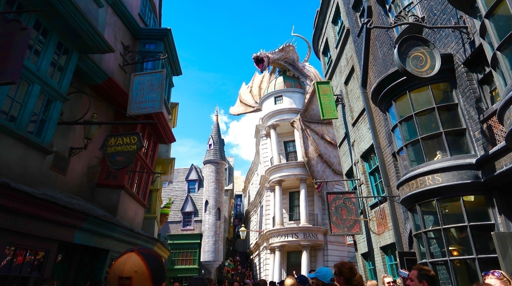

Predicting the new attractions at Japan's USJ！
7/22 2020
カテゴリー：Blog/Theme Park
▲１.New Area：｢SUPER NINTENDO WORLD｣

From the video and website, it looks like this will be an attraction where you can collect coins using your smartphone. It seems that the coins will be collected by linking the band on your wrist to the official USJ app on your iPhone!
Nearly three years after it was announced, what kind of attraction will it be? We can't wait to see what it's going to be like.
▲２.SUPER NINTENDO WORLD is different from COOL JAPAN
It tends to be a mixed bag, but SUPER NINTENDO WORLD is a "new area" and is completely separate from Universal Cool Japan.
At first I thought "Mario in USJ? I was taking a light-hearted stance, thinking "COOL something or other (excuse me) only in Japan is coming to Universiade again?", but it looks like that's not the case, and I was really surprised when the official announcement was made!
And this time, it looks like a similar facility will be built at Universal Studios in the United States, the home of the game (which is amazing ∑(ﾟДﾟ)）).
Maybe I'm mistaken, but if this is true, I don't think Japan's gaming culture is something to be abandoned.
▲３.It may be coming to Japan in the future: the Hagrid "Magical Creatures Motorcycle Adventure"

There are actually many attractions that you can find at Universal's Studios in the U.S., the home of Universal Studios, but not in Japan.
As I recall, Nocturne Alley and Gringotts are facilities that you don't find in Japan.
However, I think it's difficult to install such so-called "building systems" in the small area of Japan.
△The real Harry Potter area, which does not exist in Japan
In the back, the Gringotts Bank is being raided by the dragon that Harry and his friends missed...!

How likely is it that the attraction will come to Japan?
Hagrid's Magical Creatures Motorbike Adventure is relatively easy to build because it doesn't have too large a facility. And personally, I'm pretty excited about it.
In addition, because of the simple concept of a roller coaster-type attraction, I personally think that this is the attraction that will be most likely to be imported and installed in Japan among the attractions that are in operation only overseas. ♪(´ε｀ )！
However, due to the effects of the coronavirus, I wonder if there will probably be no new attractions installed within the next year. It is a pity.
▲4.Will Mario go down in history as an attraction created at the dawn of Corona? (Maybe)

I'm excited to think that "SUPER NINTENDO WORLD" will become an iconic attraction that will be covered extensively by the news and other media as an attraction that was built at the end of the corona.
▲5.Goods available at SUPER NINTENDO WORLD
△Arm-worn "power band
By linking this band to the mobile app, you can enjoy the attractions in the park even more.
It looks like you can check your coin collection status and compete against each other.
I thought this was a lending system, but it looks like they're going to sell it as merchandise. I was quite surprised by this too. (In a good way.)

So far, this is the only information we know about merchandise, but looking at the Universal Studios PR video, there may be some Nintendo character-related stuffed animals for sale. ♪( ´θ｀)ノ
▲６.Galantis x Charli XCX's gorgeous theme song
The theme song by Galantis and Charlie XCX's gorgeous (and really insanely gorgeous) artists has been released.
They are amazing people, so I wonder how much it cost to produce them. Let's not think about it...it's horrible.
I may have spoken too much all at once, but I'm a brainy person by nature, and tomorrow I'll be thinking about something else.
Please come back and check it out if you like.
Please send your comments to "Contact" in the header menu.ヽ(´ー｀)！